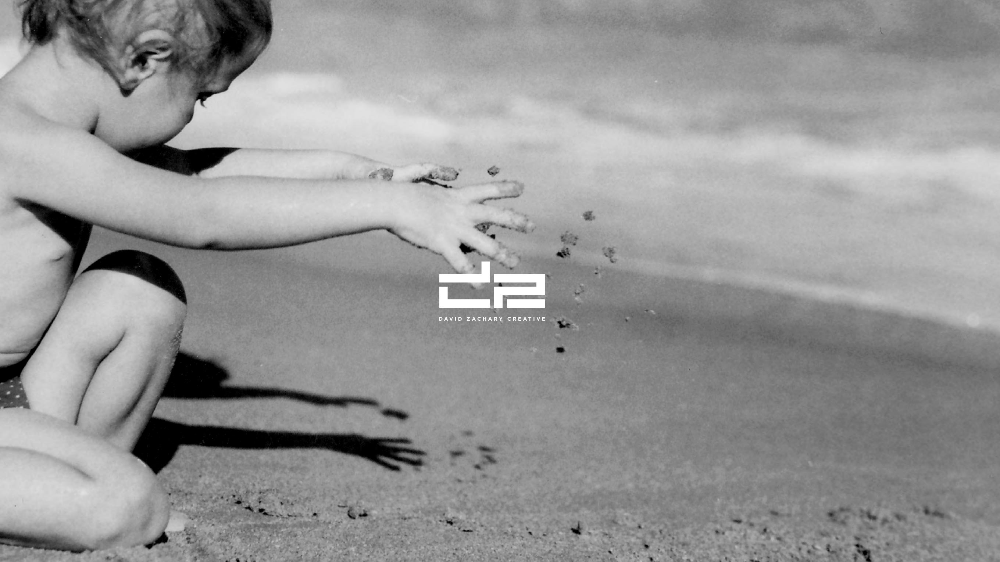

Creative Director · Designer · Brand Builder
ConceptsCraft
I’m David Zachary — I build brands and campaigns for the places where science, health and culture meet. Twenty years turning complex ideas into work people feel.
Selected Work — 2005 → 2026Scroll ↓
01
Brand System · BGB Group
Beyond
A challenger identity for the agency redefining medical communications.

01 · Brand System · BGB GroupBeyond
02
Brand · Innovation × Intelligence
IXI
Where scientific rigor meets creative instinct — an identity built on the multiply sign.

02 · Brand · Innovation × IntelligenceIXI
03
Brand · Editorial
Soulful Science
Humanising the science — a warm, signature X-frame visual language.

03 · Brand · EditorialSoulful Science
04
Brand · Global Genes
RareCast
Giving the rare-disease community a voice — a podcast identity with reach.

04 · Brand · Global GenesRareCast
05
Campaign · Celgene
The Eye
One image, one idea — the concept that makes an audience truly see.

05 · Campaign · CelgeneThe Eye
06
Identity · Collected
The Marks
Twenty years of logos — the discipline of the single, perfect symbol.

06 · Identity · CollectedThe Marks
07
Campaign · Oncology
OPDIVO
Scale and stakes — a launch campaign that fills the whole arena.

07 · Campaign · OncologyOPDIVO
&
Concepts & craft. The little sign that holds the whole practice together.

 David Zachary Creative
David Zachary Creative
Let's begin
Let's make something real.
hello@davidzachary.co
hello@davidzachary.co